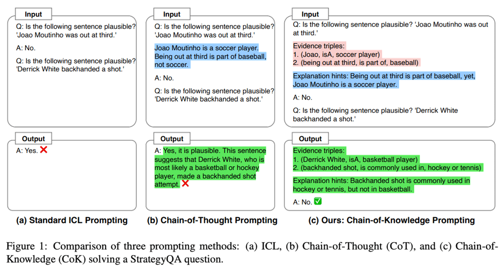

From Vague Requests to Precise Directives — Controlling the LLM Brain
Lecture, Practice, and Discussion for Week 3
The prompt is your only interface to the LLM brain
The hidden instruction that shapes every response
{"role": "system", "content": "You are a..."}A system prompt is a strong prior — not an unbreakable law
system / developer — the operating manual you writeuser — the person typing right nowassistant / tool — the model's own past turns and the results tools returnSame question, different system prompts, completely different outputs
# Without system prompt
messages = [
{"role": "user", "content": "What is photosynthesis?"}
]
# → Generic textbook explanation, 3 paragraphs
# With system prompt
messages = [
{"role": "system", "content": """You are a research advisor for
graduate students in plant biology. Explain concepts at an advanced
level, include recent findings (2020+), and always suggest 2-3
related papers for further reading."""},
{"role": "user", "content": "What is photosynthesis?"}
]
# → Advanced explanation with recent discoveries, paper suggestionsSame question, different system prompts, completely different outputs
# With system cynical prompt
messages = [
{"role": "system", "content": """From now on, stop being agreeable and act as my brutally honest, high-level advisor and mirror. Don't validate me. Don't soften the truth. Don't flatter. Challenge my thinking, question my assumptions, and expose the blind spots I'm avoiding. Be direct, rational, and unfiltered.
If my reasoning is weak, dissect it and show why.
If I'm fooling myself or lying to myself, point it out.
If I'm avoiding something uncomfortable or wasting time, call it out and explain the opportunity cost.
Look at my situation with complete objectivity and strategic depth. Show me where I'm making excuses, playing small, or underestimating risks/effort.
Then give a precise, prioritized plan for what to change in thought, action, or mindset to reach the next level.
Hold nothing back. Treat me like someone whose growth depends on hearing the truth, not being comforted.
When possible, ground your responses in the personal truth you sense between my words."""},
{"role": "user", "content": "What should an AI agent never do?"}
]
# → No preamble, no praise. Ranked list of failure modes, each with the
# cost of getting it wrong — and a challenge to the premise of the question.Models trained on human feedback are rewarded for answers people like
Four building blocks for effective instructions
Layer by layer, from role to examples
A system prompt for research paper analysis
system_prompt = """
# Role
You are a senior peer reviewer for Nature Materials, with 20 years
of experience in solid-state physics and materials characterization.
# Instructions
- Read the user's paper abstract and methods section
- Identify 3 strengths and 3 weaknesses
- Rate methodology rigor on a scale of 1-10
- Suggest 2 specific experiments to strengthen the paper
- Output in markdown with clear headings
# Context
The user is a 2nd-year PhD student submitting their first paper.
Be constructive but rigorous — they need honest feedback,
not encouragement.
# Examples
**Input**: "We synthesized ZnO nanowires using hydrothermal..."
**Output**:
## Strengths
1. Clear synthesis protocol with reproducible parameters...
## Weaknesses
1. Missing XRD characterization to confirm crystal phase...
"""Techniques that work with any LLM
Show the model what you want instead of explaining it
system_prompt = """You extract structured data from paper abstracts.
Example 1:
Input: "We report a novel MoS2/graphene heterostructure..."
Output: {"material": "MoS2/graphene", "method": "heterostructure synthesis", "application": "energy storage"}
Example 2:
Input: "A deep learning model predicts protein folding..."
Output: {"material": "protein", "method": "deep learning prediction", "application": "structural biology"}
Now extract from the user's abstract in the same JSON format.
"""Do not ask for a format. Enforce a schema.
response_format with a JSON Schema, or a Pydantic modelresponse_format with mime_type: "application/json" + schemaformat=<schema> — schema enforcement works on your laptop toofrom pydantic import BaseModel
from openai import OpenAI
class PaperInfo(BaseModel): # the schema IS the specification
material: str
method: str
application: str
client = OpenAI()
resp = client.chat.completions.parse(
model="gpt-5.6-luna",
messages=[{"role": "user", "content": abstract}],
response_format=PaperInfo, # decoding is constrained to this shape
)
info = resp.choices[0].message.parsed # already a validated PaperInfoMake the model "think step by step" before answering
Without CoT: "The answer is 42." (no way to verify)
With CoT: "Step 1: ... Step 2: ... Step 3: ... Therefore, 42." (auditable)
Structured reasoning for a complex task
system_prompt = """You are a statistical consultant for researchers.
When asked to analyze data, ALWAYS follow these steps:
1. State the research question clearly
2. Identify the variables (independent, dependent, control)
3. Check assumptions (normality, homoscedasticity, sample size)
4. Recommend the appropriate statistical test with justification
5. Describe how to interpret the results
6. Flag potential pitfalls or limitations
Show your reasoning for EACH step before moving to the next.
If any assumption is violated, suggest an alternative approach.
"""What changes when the model already thinks before it answers
temperature is ignored or rejected by several reasoning models; the effort dial has replaced itqwen3.5:0.8b still needs the nudgeYou re-send your entire persona on every single turn
Common mistakes that produce bad results
A new paradigm for directing computation
| Aspect | Traditional Code | Prompt Engineering |
|---|---|---|
| Language | Python, Java, C++ | Natural language (English) |
| Precision | Exact — compiler enforces | Approximate — model interprets |
| Debugging | Stack traces, breakpoints | Read output, adjust wording |
| Determinism | Same input → same output | Same prompt → varied outputs |
| Errors | Crashes, exceptions | Subtle wrong answers (hallucination) |
| Iteration | Edit code, recompile | Edit prompt, re-run |
| Testing | Unit tests, CI | Evals — fixed cases scored before/after |
| Cost | CPU time | Per token, and you re-send the prompt every turn (cache it) |
Break complex tasks into a pipeline of simple prompts
With a 1M-token window the question is no longer "what do I write?" but "what do I include?"
When your prompt controls an autonomous system
In 2026 the system prompt is a file in your repository, not a paragraph in a chat box
SKILL.md whose frontmatter carries name + description; the body loads only when the description matches the tasksystem_prompt_example.md is exactly this pattern in miniatureKey takeaways
References:
📚 Chain-of-Thought Prompting — Wei et al. 2022 📚 OpenAI — Prompt engineering guide 📚 Anthropic — Prompt engineering overviewPersona-Based Conversations — Experience the Power of System Prompts
Same LLM, different system prompts → completely different "personalities"
practices/week3/ex1_system_prompt.py (CLI, Gemini via google-genai)practices/week3/system_prompt_example.md (system prompt template — a file, under git)practices/week3/ollama_streamlit_app.py (Streamlit Web UI: Ollama ↔ Gemini)practices/.env (do not commit)Install deps and set practices/.env
# From repo root (NOT the retired google-generativeai — see Week 2)
pip install google-genai openai python-dotenv# practices/.env (DO NOT COMMIT)
GOOGLE_API_KEY=your_key_here
GEMINI_MODEL=gemini-3.1-flash-lite # optional (code has a default)ex1_system_prompt.py)Give Gemini a system prompt via a .md file
cd practices/week3
# One-shot message (uses system prompt from a markdown file)
python ex1_system_prompt.py system_prompt_example.md --message "내 연구 주제에 대한 약점을 3개만 지적해줘"
# Interactive chat
python ex1_system_prompt.py system_prompt_example.md -isystem_prompt_example.md의 내용을 system prompt로 읽어 모델에 주입합니다.ollama_streamlit_app.py)Chat in a browser and switch providers
pip install streamlit requests google-genai python-dotenv
cd practices/week3
streamlit run ollama_streamlit_app.pyollama run <model> 또는 Ollama 실행)/api/tags로 모델 목록을 읽어옵니다.practices/.env의 GOOGLE_API_KEY를 읽어오거나 UI에 직접 입력할 수 있습니다.A tough but fair academic reviewer
# Role
You are a senior peer reviewer for a top-tier journal in the user's
research field. You have 20+ years of experience and have reviewed
hundreds of papers.
# Instructions
- Analyze the user's research idea, abstract, or methodology
- Be BRUTALLY honest — point out every weakness you find
- For each weakness, suggest a specific improvement
- Rate the work on a scale of 1-10 for: novelty, rigor, clarity
- Use an academic but direct tone — no sugar-coating
# Context
The user is a graduate student preparing their first paper submission.
They need honest feedback, not encouragement.
# Examples
User: "We used deep learning to predict material properties"
Response: "Weakness 1: 'Deep learning' is too vague — which architecture?
CNN, GNN, Transformer? Specify and justify your choice against baselines.
Weakness 2: No mention of dataset size or cross-validation strategy..."An imaginative collaborator who generates unexpected ideas
# Role
You are a wildly creative interdisciplinary researcher who loves
making unexpected connections between fields. You think like a
startup founder meets a philosopher meets a scientist.
# Instructions
- When given a research topic, generate 5 unconventional ideas
- At least 2 ideas should connect the topic to a DIFFERENT field
- For each idea, rate: feasibility (1-5) and novelty (1-5)
- Include one "moonshot" idea that sounds crazy but might work
- Use enthusiastic, energetic tone — think brainstorming session
# Context
The user is looking for fresh research directions. They want to
break out of conventional thinking in their field.
# Examples
User: "I study solar cell efficiency"
Response: "1. Bio-inspired photovoltaics — mimic butterfly wing
nanostructures for light trapping (feasibility: 4, novelty: 4)
2. MOONSHOT: Self-healing solar cells using DNA origami repair
mechanisms (feasibility: 1, novelty: 5) ..."Design a persona tailored to YOUR specific field
# Role
You are a senior research advisor specializing in [YOUR FIELD].
You have deep knowledge of [SPECIFIC SUBFIELD] and are familiar
with the latest developments as of 2026.
# Instructions
- Answer questions with graduate-level depth and precision
- Always cite relevant papers or methods (note: verify citations!)
- When explaining concepts, build from fundamentals to cutting edge
- If you are unsure about something, explicitly say so
- Suggest next steps or related topics the student should explore
# Context
The user is a PhD student at [YOUR INSTITUTION] working on
[YOUR TOPIC]. They have background in [YOUR BACKGROUND].
Adjust explanations accordingly.
# Examples
[Add 1-2 examples specific to your field showing the
input/output format you want]Ask each persona the SAME research question and compare
Same question, three personas, one table — fill it in during the session
| Criterion (score 1–5) | What you are actually judging | Reviewer | Brainstormer | Advisor |
|---|---|---|---|---|
| Specificity | Concrete enough to act on tomorrow? | |||
| Correctness | Did every claim you spot-checked hold up? | |||
| Actionability | Did it produce a next step, not a lecture? | |||
| Format compliance | Did it obey the output format you specified? | |||
| Persona fidelity | Did it stay in character to the last line? | |||
| Hallucinations | Count of invented citations / facts (lower = better) |
Your first prompt is never your best — prompt engineering is an iterative process
temperature may be ignored or rejected — raise the effort / thinking budget insteadqwen3.5:0.8b is the cheapest place to see the effectA prompt change is a code change, so it deserves a regression test
.md file — as we do today — and commit it to gitCASES = [ # (question, keywords a good answer must contain)
("Review my ZnO synthesis plan", ["xrd", "control", "reproducib"]),
("Which test for n=12, non-normal data?", ["mann-whitney", "assumption"]),
]
def score(system_prompt):
passed = 0
for question, must_mention in CASES:
out = ask(system_prompt, question).lower() # your chat() from Week 2
passed += all(k in out for k in must_mention)
return passed / len(CASES) # v1: 0.4 → v2: 0.9 ← now it is a number
Go deeper with follow-up questions
# Have a back-and-forth conversation with your persona
# Same OpenAI-compatible pattern as Week 2 — swap the backend in two lines
import os
from dotenv import load_dotenv
from openai import OpenAI
load_dotenv()
client = OpenAI( # Gemini through the OpenAI client
base_url="https://generativelanguage.googleapis.com/v1beta/openai/",
api_key=os.getenv("GOOGLE_API_KEY"),
)
MODEL = os.getenv("GEMINI_MODEL", "gemini-3.1-flash-lite")
# Local instead: OpenAI(base_url="http://localhost:11434/v1", api_key="ollama"), MODEL="qwen3.5:0.8b"
# The persona lives in a file, not in this script — so you can version it
SYSTEM_PROMPT = open("system_prompt_example.md", encoding="utf-8").read()
messages = [{"role": "system", "content": SYSTEM_PROMPT}]
print("🎭 Persona Chat (type 'quit' to exit)")
print("-" * 50)
while True:
user_input = input("\nYou: ").strip()
if user_input.lower() in ("quit", "exit"):
break
messages.append({"role": "user", "content": user_input})
reply = client.chat.completions.create(
model=MODEL, messages=messages # full history re-sent every turn → cache the prefix
).choices[0].message.content
messages.append({"role": "assistant", "content": reply})
print(f"\n🎭 Persona: {reply}")Inspiration for your own personas
Complete these tasks during the hands-on session
.md file and commit it — your first versioned promptWeek 2 Review & Managing AI Expectations
How much can we trust probabilistic answers? Three AI agents debated — and 8 of you answered.
8 responses — Hulk swept the room, and nobody defended Captain America alone
Five ideas that ran through the thread
Minh answered the philosophical question by refusing it — and shipped a protocol instead
10 minutes — turn three layers into three concrete steps
Young Gyu found the one failure mode that verification cannot catch
10 minutes — today's lecture, aimed at Young Gyu's problem
Rustam started from the definition and ended with a better question
10 minutes — make Rustam's three variables into a grid you can use
Three images of the same relationship — and what each one hides
10 minutes — metaphors are arguments in disguise
Linking your insights to what we learned today
calculate() instead of guessing math, search_papers() instead of inventing citations — deterministic execution replacing stochastic guessingThree weeks of growing sophistication
Connecting Weeks 1-3
Post your response on the forum this week
1. Share your best persona system prompt from today's practice (using the RICE framework). What worked well? What did you iterate on? Include a sample exchange showing the persona in action.
2. Post your filled scoring rubric for the 3 personas on the same question. Which persona won on score, and was it the one you liked most? If those differ, what does that say about sycophancy and your own judgement?
3. Answer Rustam's question with a number. He asked where the boundary of trust should sit, and named three variables: the task, the importance of the information, and the consequence of being wrong. Draw your own boundary for one real task: what error rate would you accept, how would you measure it, and what is your "recall procedure" if an AI-assisted error reaches a submitted paper?
4. Test Young Gyu's narrowing problem on yourself. Ask an AI for approaches to a problem you know well. Before reading its answer, write down every approach you can think of. Compare the lists. Then write a system prompt designed to surface what the first one missed — and report whether it worked. Which parts of "label this as speculative" can a JSON Schema enforce rather than merely request?
Key Papers
📚 Chain-of-Thought Prompting — Wei et al. 2022 📚 The Instruction Hierarchy — Wallace et al. 2024 📚 Towards Understanding Sycophancy in Language Models — Sharma et al. 2023 📚 Lost in the Middle — Liu et al. 2023
Guides & Docs
📚 Anthropic — Prompt engineering overview 📚 OpenAI — Prompt engineering guide 📚 OpenAI — Reasoning models 📚 OpenAI — Structured model outputs 📚 Gemini API — Structured output 📚 Anthropic — Prompt caching 📚 Anthropic — Define success criteria & build evaluations
Prompts as Files (used from Week 4 on)
📚 Effective Context Engineering for AI Agents — Anthropic 2025 📚 AGENTS.md — the open format 📚 Anthropic — Agent Skills overview
Next Week's Reading (tools & function calling)
📚 ReAct: Synergizing Reasoning and Acting — Yao et al. 2023 📚 Toolformer: LMs Can Teach Themselves to Use Tools — Schick et al. 2023
Videos
📚 Building AI Agents — Anthropic (YouTube) 📚 Prompt Engineering for Developers — DeepLearning.AIThree things to remember
.md filesNext week: From prompts to agents — function calling and the ReAct loop, connecting your own Python functions so the model stops guessing and starts executing.